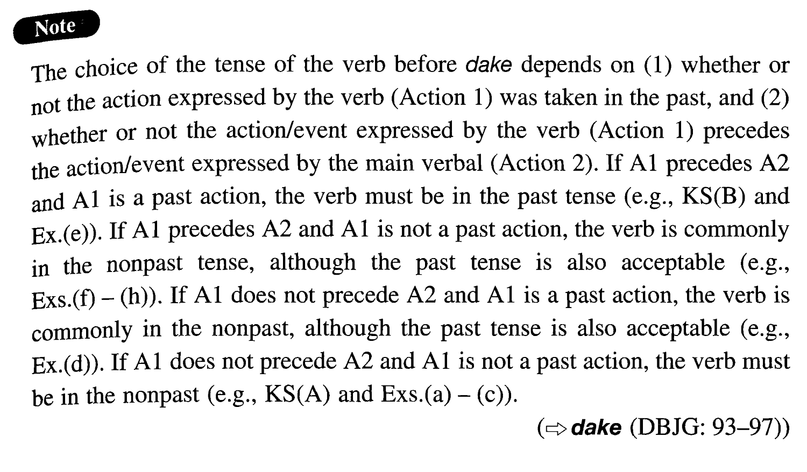

だけで (I. 23)
- (ksa).
- 君はここに座っているだけでよい。
- You can just sit (literally: be sitting) here.
- (ksb).
- 私は筆跡を見ただけで誰が書いたか分かった。
- I knew who wrote it just by looking at the handwriting.
- (a).
- この植木は二週間に一度水をやるだけでよい。
- Watering just once every other week is enough for this plant.
- (b).
- この用紙にサインしていただくだけで結構です。
- It will be enough if you just sign this form.
- (c).
- 本当に来るだけでいいんですか。
- Are you sure that I don't have to do anything except attend?
- (d).
- その会議では私はただ座っているだけでよかった。
- At that meeting all I had to do was sit there.
- (e).
- 村上君は一週間勉強しただけであの試験に通ったそうだ。
- I heard that Murakami passed that exam just by studying for one week.
- (f).
- お金を入れてボタンを押すだけで暖かいラーメンが出てくる自動販売機がある。
- There is a vending machine which serves hot ramen (literally: from which hot ramen comes out) just by inserting coins and pushing a button.
- (g).
- 頭金一万円を払うだけで品物をお届けします。
- If you just pay 10,000 yen as deposit, we'll deliver the product.
- (h).
- 聞くだけで胸が悪くなるような話だ。
- Just hearing that story makes me sick. (literally: It is a story that makes me sick just by hearing it.)
